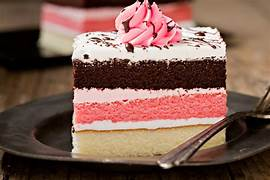

🎂 Receta para hacer un Pastel Casero

Ingredientes:
- 3 tazas de harina
- 2 tazas de azúcar
- 1 taza de leche
- 4 huevos
- 1 taza de mantequilla derretida
- 2 cucharaditas de polvo de hornear
- 1 cucharadita de esencia de vainilla
- 1 pizca de sal
- Opcional: cobertura de chocolate, fresas, crema batida.
Preparación:
- Precalienta el horno a 180°C.
- En un tazón grande, mezcla la harina, azúcar, polvo de hornear y sal.
- En otro recipiente, bate los huevos con la leche, la mantequilla derretida y la esencia de vainilla.
- Incorpora los ingredientes líquidos en los secos y mezcla hasta obtener una masa homogénea.
- Vierte la mezcla en un molde engrasado y hornea por 35-40 minutos.
- Deja enfriar antes de desmoldar y decorar con tu cobertura favorita.
- ¡Disfruta de tu delicioso pastel casero! 🎂